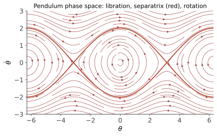

本页目录
力学 III · 哈密顿力学与相空间
对标：Goldstein §8–9 / Landau §7 ｜ 前置：mech-02、cvx-01（Legendre 变换！） 力学的第三种写法：用 Legendre 变换把 \((q,\dot q)\) 换成 \((q,p)\)——相空间。方程降为一阶对称形式、演化成为相空间的“流”、泊松括号让力学代数化。这不只是换记号：量子力学（对易子）与统计物理（相空间测度）都从这扇门进屋。
学习层：单摆怎样把相空间“切”出分离曲线（separatrix）？
1. 先抓住一个可视化问题
一根无量纲单摆从初始状态 \((\theta_0,p_0)\) 出发。只看这两个数，你能否判断它会在最低点附近来回摆动，还是越过顶点持续转动？临界情形为什么不是一条普通的“中间轨道”，而是会在鞍点附近无限变慢的分离曲线（separatrix）？
本页把问题压缩成
这里 \(\theta\) 是从向下稳定方向量起的角度，\(p\) 是无量纲共轭动量。能量 \(E=H(\theta_0,p_0)\) 不需要数值积分就能直接得到。
2. 先把 Legendre 变换的边界说准确
从拉格朗日描述到 Hamilton 描述时，力学只需要速度 Hessian 非退化：
它保证 \(p_i=\partial L/\partial\dot q_i\) 能在局部反解为 \(\dot q_i=\dot q_i(q,p)\)，从而定义 \(H=\sum_i p_i\dot q_i-L\)。只有当 \(L\) 对速度严格凸时，这个变换才与凸分析中的共轭最贴近；“可局部反解”本身不能把任意力学 Legendre 变换直接等同于凸共轭。
3. 相图的几何读法
\(\theta\) 是周期变量，所以 \((\theta,p)\) 的相空间是圆柱；把 \(-\pi\leq\theta\leq\pi\) 画成矩形只是切开圆柱，左右边界要识别。线性化或看势能 \(1-\cos\theta\) 可得：\((0,0)\) 是稳定平衡，\((\pi,0)\) 是不稳定平衡，也就是鞍点。
能量阈值是顶点势能 \(E=2\)：
- \(E<2\)：摆动，\(\theta\) 在转向点之间往复；
- \(E=2\)：分离曲线（separatrix）能级；
- \(E>2\)：转动，摆越过顶点，\(\theta\) 沿周期方向持续绕行。
等能曲线可以直接画成
要特别区分“能级集合”和“单条轨道”：\(E=2\) 的整个能级集合并非单条轨道，它包含按 \(\theta\) 周期识别的鞍点 \((\pi,0)\)，以及趋近鞍点的分离轨道。若初始点正好是 \((\pi,0)\)，Hamilton 方程给出 \(\dot\theta=\dot p=0\)，它会停在鞍点，不能暗示它沿分离曲线（separatrix）自发运动。
4. 动手读三种动力学，再核对两个平衡
下面的确定性实验只把解析等能曲线、当前点、单摆姿态和能量预算同步画出来；没有随机抽样、远程依赖、数值积分或动画。先比较摆动、分离曲线（separatrix）和转动，再点击两个平衡，观察“不稳定”并不等于“会自己离开鞍点”。
无 JavaScript 时的静态读法：模型为 \(H(\theta,p)=p^2/2+1-\cos\theta\)，所以 \(E=H(\theta_0,p_0)\)，动能 \(K=p_0^2/2\)，势能 \(V=1-\cos\theta_0\)。五个预设的精确能量是：摆动 \(E=0.5\)，\((\theta_0,p_0)=(0,1)\)；分离曲线（separatrix）\(E=2\)，\((\theta_0,p_0)=(0,2)\)；转动 \(E=2.88\)，\((\theta_0,p_0)=(0,2.4)\)；稳定平衡 \((0,0)\) 的 \(E=0\)；不稳定平衡 \((\pi,0)\) 的 \(E=2\)。\(E=2\) 的整个能级集合包含鞍点和趋近鞍点的分离轨道，因此“不稳定平衡”预设停在鞍点，不会沿分离曲线（separatrix）自发运动。相图的横轴是圆柱的一个切口，红色虚线是 \(E=2\) 的分离曲线（separatrix），蓝线是当前等能轨道。
5. 误区与边界
- 摩擦会换模型。若加入 \( \dot p=-\sin\theta-\gamma p\)，能量一般不再守恒；此时不能继续把轨迹当作同一个二维自治 Hamilton 系统的等能线。
- Liouville 的“没有吸引子”有适用范围。它说的是完整、保体积的 Hamilton 相流不能把一片相空间体积压缩成通常意义的吸引子，不是对耗散约化模型的泛化。
- 曲线不是时间演化。解析式给出能级集合；要沿某一支读方向，还要结合 \(\dot\theta=p\) 和 \(\dot p=-\sin\theta\)。鞍点本身的速度为零。
把一维单摆当作模板：先由 \(H\) 找不变量，再看周期坐标的拓扑，最后用临界能量分开轨道类型。这个顺序也适用于更一般的一维自治 Hamilton 系统。
1. Legendre 变换与正则方程
哈密顿量：\(H(q,p,t)=\sum_i p_i\dot q_i-L\)，其中 \(p_i=\frac{\partial L}{\partial\dot q_i}\)（广义动量）。力学只需速度 Hessian \(\det\bigl(\frac{\partial^2L}{\partial\dot q_i\partial\dot q_j}\bigr)\ne0\)，以便把 \(\dot q\) 在局部反解成 \(\dot q(q,p)\)。若 \(L\) 对速度严格凸，才与凸分析中的共轭最贴近；仅有非退化性时，不宜把一般 Legendre 变换直接称为凸共轭。对 \(L=T-V\)、\(T\) 关于速度二次齐次且 \(V\) 不含速度的自然系统，有 \(H=T+V\)；若系统还无显含时间，\(H\) 才守恒。
正则方程【推导】 对 \(dH=\sum_i(\dot q_i\,dp_i+p_i\,d\dot q_i)-dL\) 展开，\(dL\) 的 \(\frac{\partial L}{\partial\dot q_i}d\dot q_i\) 项恰与 \(p_i\,d\dot q_i\) 相消（共轭变换的设计目的），再用 EL 方程 \(\frac{\partial L}{\partial q_i}=\dot p_i\)：
\(2n\) 条一阶方程替代 \(n\) 条二阶——相空间 \((q,p)\) 中的一阶流（ode-03 的动力系统语言全面接管：平衡点、相图、稳定性照单全收）。
2. 相空间的几何：Liouville 定理

定理（Liouville） 足够光滑的标准 Hamilton 相流保持相空间体积。 【推导】 相流的“速度场” \(v=\bigl(\frac{\partial H}{\partial p},-\frac{\partial H}{\partial q}\bigr)\) 的散度：
（混合偏导相等——数分 V 又一次在关键处执勤。）散度为零 ⇒ 流不可压缩 ⇒ 体积不变（数分 VI 输运定理）。\(\blacksquare\)
读法（两大后果）：① 统计物理的地基——相空间体积是演化不变的天然测度，微正则系综“等概率假设”因此有资格（sm-02 收线）；② 对完整、保体积的 Hamilton 相流，不能有通常意义的吸引子（体积不能收缩），但这个结论不能扩张到加入阻尼后的耗散约化模型。这是“保守 vs 耗散”的几何分界。（更深一层【引用】：流保持的不止体积而是辛形式 \(\sum dq_i\wedge dp_i\)——微分形式的语言（grad-math 流形 II）在此有物理岗位；辛几何是哈密顿力学的数学本体。）
3. 泊松括号：力学的代数形态
定义 \(\{f,g\}=\sum_i\left(\frac{\partial f}{\partial q_i}\frac{\partial g}{\partial p_i}-\frac{\partial f}{\partial p_i}\frac{\partial g}{\partial q_i}\right)\)。
万物演化的统一公式【推导】（链式法则 + 正则方程一行）：
——\(H\) 是时间演化的生成元；若 \(f\) 无显含时间，\(f\) 守恒当且仅当 \(\{f,H\}=0\)。若 \(f\) 显含时间，守恒条件则是 \(\{f,H\}+\frac{\partial f}{\partial t}=0\)，不能省略后一项。基本括号：\(\{q_i,p_j\}=\delta_{ij}\)。性质：反对称、Jacobi 恒等式、Leibniz——Lie 代数结构（两个守恒量的括号仍守恒——Poisson 定理，造新守恒量的机器）。
量子力学的门牌（本页最大伏笔）：Dirac 的正则量子化处方——
泊松括号换成对易子、\(\{q,p\}=1\) 变成 \([\hat q,\hat p]=i\hbar\)——这是重要的对应与量子化处方；它不是声称任意经典可观测量都能逐字典、无矛盾地整体量子化，算符排序、定义域和自伴性等问题还需另行处理。量子力学的 Heisenberg 运动方程在适合的可观测量上与本页公式形式对应（qm-01/aqm 系列兑现）。
正则变换与 Hamilton–Jacobi 一瞥【引用】：保持括号结构的坐标变换（辛变换）；HJ 方程 \(\frac{\partial S}{\partial t}+H\bigl(q,\frac{\partial S}{\partial q}\bigr)=0\) 把力学化成一条一阶 PDE——作用量 \(S\) 当“波前”：力学的波动形态，历史上是 Schrödinger 方程的直接跳板（经典极限 \(\psi\sim e^{iS/\hbar}\) 的出处）。
4. 练习与要点
例 1（正则方程解谐振子） \(H=\frac{p^2}{2m}+\frac12m\omega^2q^2\)：相流是椭圆等能线；在缩放坐标 \(Q=\sqrt m\,\omega q,\ P=p/\sqrt m\) 中相位匀速转动，在原始 \((q,p)\) 图上不应把它理解成普通欧氏弧长意义的匀速。Liouville：椭圆环带面积随流不变。
例 2（括号练手） 验证角动量分量 \(\{L_x,L_y\}=L_z\)（直接展开定义）——角动量的 Lie 代数（\(SO(3)\) 的结构常数）在经典力学里已经在场；量子对易子 \([L_x,L_y]=i\hbar L_z\) 是在适用条件下的对应（aqm-01 的主角提前露面）。
例 3（守恒量速判） \(H=\frac{p^2}{2m}+V(r)\)（中心势）：\(\{L_z,H\}=0\) 直接计算验证——“旋转对称 ⇒ 角动量与 \(H\) 对易 ⇒ 守恒”：Noether（mech-02）在括号语言里的重述，三种力学写法在同一事实上会师。\(\blacksquare\)
下一页：本科力学收官——小振动的普遍理论（简正模：一切"稳定平衡附近"的物理）与刚体转动。